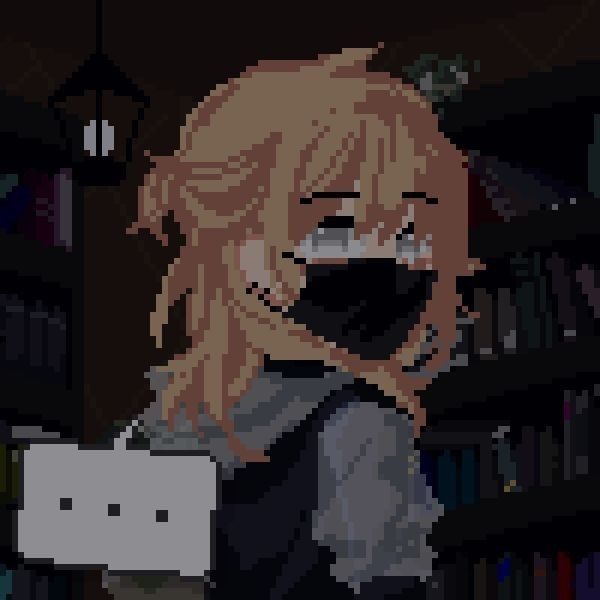

✳ DEVELOPER. GAMER. ALWAYS EVOLVING.
João Aduílio
Developer / Tech Enthusiast
Learning, building and turning random ideas into real projects.
Building cool things and becoming a better developer.
HANDS ON THE KEYBOARD.

01 / THE PERSON BEHIND THE SCREEN
PLAYER PROFILE.
- name
- João Aduílio
- class
- Developer
- location
- Brazil
- status
- Learning _
- specialty
- Creative Projects
- current_focus
- Programming & AI
Curiosity is my
default setting.
I'm João Aduílio, a developer in the making from Brazil. I like figuring out how things work — then seeing what else they could become.
Some days that means writing Python. Other days, it's experimenting with a game idea or going down an AI rabbit hole. This is my little corner of the internet to share what I'm building and learning along the way.
02 / EQUIPPED & ALWAYS UPGRADING
SKILL MATRIX.
* Levels are a playful snapshot of my journey, not an objective skill rating.
03 / THE NEXT CHECKPOINT
ACTIVE QUESTS.
04 / IDEAS THAT MADE IT OUT OF MY HEAD
PROJECT ARCHIVE.
Archive preview · Projects and technologies are editable placeholders.
⌗ DEVELOPER STATS
CHARACTER SHEET / SNAPSHOTPersonal counters · sample values, updated manually.
05 / SAVING PROGRESS
DEV_LOG.
> one commit
at a time_
No speedruns here. Just curiosity, a few bugs, and something new learned every day.
AUTO-SAVE ENABLED06 / START A CONVERSATION
LET'S CONNECT_
Cool idea, shared interest, or just a hello?
My next favorite project might start with a conversation.